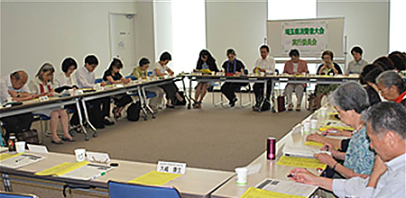

|
|
7月14日（月）第4回実行委員会が浦和コミュニティセンター第15集会室で開かれました。当日は、消費者団体23団体と事務局36人が出席しました。  最初に第50回埼玉県消費者大会の基調報告について、岩岡事務局長より一次案が提案され、話し合いました。今年50回を迎えますが、消費者の運動が社会を変える力になってきた一方で、貧困格差や雇用と老後の不安、震災復興の課題も大きく、「集団的自衛権行使容認等、国の平和に対する動きが大きく変わろうとしている」との導入に続き、教育や社会保障の充実、脱原発や省エネ・再エネの促進、食の安全、地域の見守りネットワークの構築について提案されました。 続いて全体会について、舞台レイアウト、進行案が確認されました。大会スローガンを前回の意見交換をもとに決定しました。 この他、平成26年度市町村消費生活関連事業調査の進捗状況について事務局より口頭報告された後、分科会について担当に分かれて助言者、内容などを話し合いました。 <今後の予定> 第5回実行委員会 8月19日(火)13:30～15:30 浦和コミュニティセンター第14集会室にて |